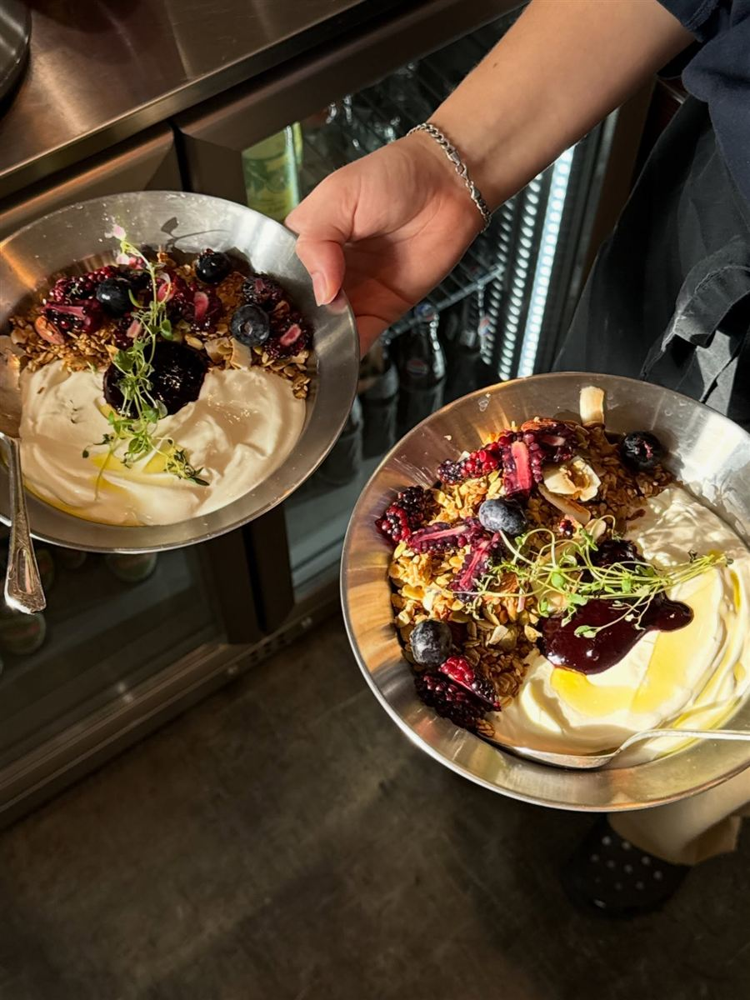
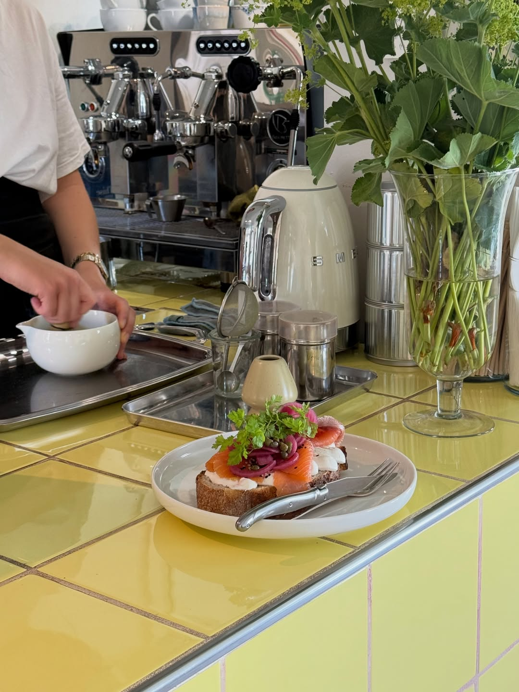
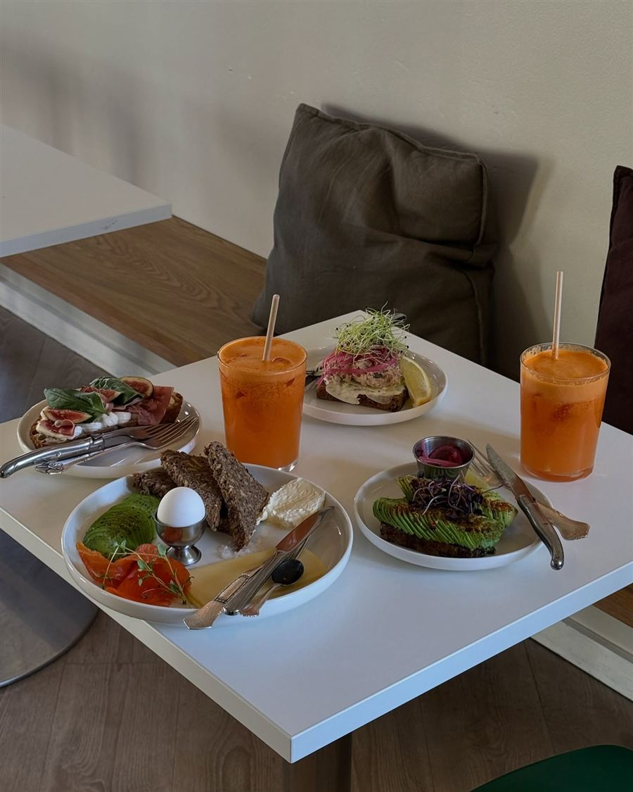
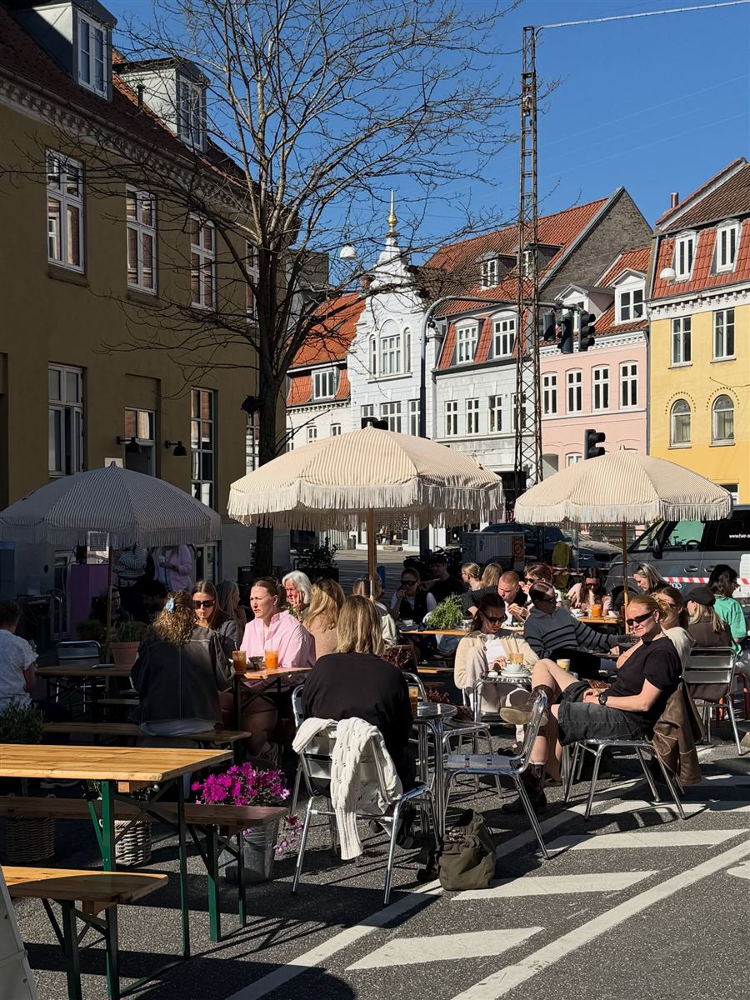

En farverig og hjemlig café med mad lavet fra bunden. Vi har åbent alle dage fra kl. 9, og vi tager ikke imod bordbestillinger, så kom bare forbi.



Man–tors 9–18, fre–lør 9–19, søn 9–16. Kun walk-in, både inde og ude.

Den Gule Café er Channie Sands café. Hun åbnede den i 2020 og står stadig selv i køkkenet og på gulvet. Væggene er lyserøde og lilla, stolene er af kurv, og maden bliver lavet fra bunden.
Når solen er fremme, rykker det hele ud på hjørnet under parasollerne. I 2025 blev vi nomineret til bedste morgenmad ved SMAGprisen.
Følg os på Instagram| Mandag | 9–18 |
| Tirsdag | 9–18 |
| Onsdag | 9–18 |
| Torsdag | 9–18 |
| Fredag | 9–19 |
| Lørdag | 9–19 |
| Søndag | 9–16 |
Vi ligger i den gule bygning på hjørnet af Jægergårdsgade og Frederiks Allé, lige op ad trapperne. To minutter fra Banegården.
Jægergårdsgade 2A
8000 Aarhus C